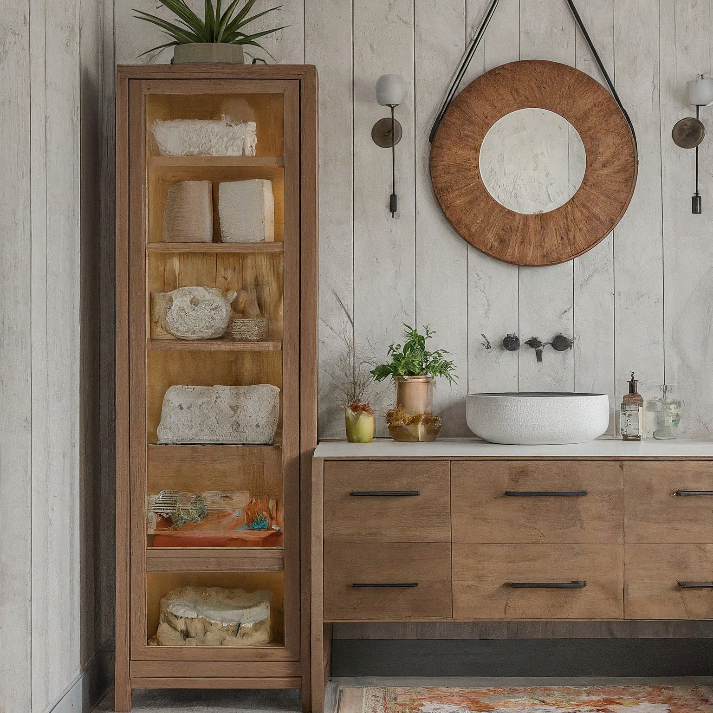
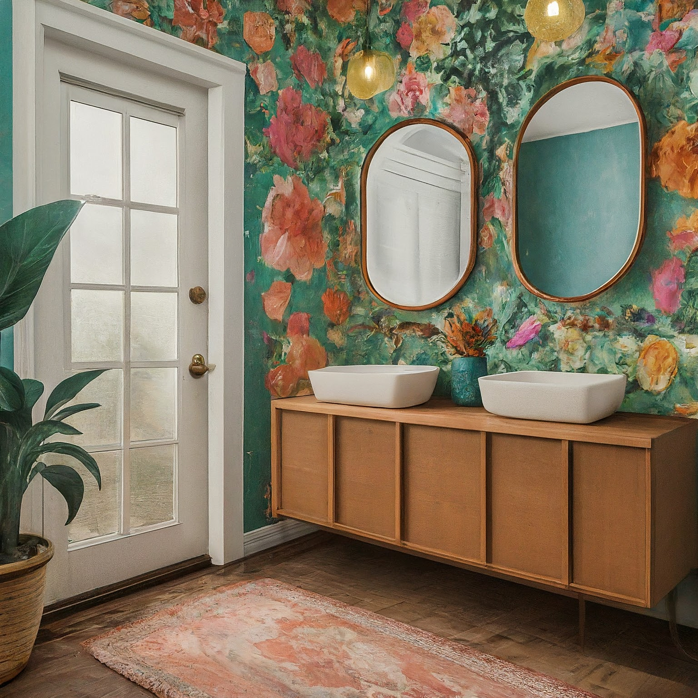

Contemporary Bohemian Powder Room Design

Contemporary Bohemian Powder Room Design
This design envisions a bright and airy powder room that blends the clean lines of contemporary design with the free-spirited, eclectic charm of Bohemian style. The focus is on creating a welcoming and joyful space that feels both stylish and comfortable. We achieve this through a bright, floral color scheme, natural textures, and a curated selection of decorative elements.
1. Overall Concept and Style:
The core concept is to create a "Contemporary Boho Oasis." This means:
- Contemporary Base: We'll start with a clean and modern foundation, characterized by simple fixtures, minimal clutter, and a focus on functionality. Think sleek lines and smooth surfaces.
- Bohemian Overlay: We'll then layer in the Bohemian elements: natural materials, vibrant colors, intricate patterns, and a relaxed, lived-in feel. This will be achieved through textiles, artwork, and accessories.
- Bright and Cheerful: The overall atmosphere should be uplifting and inviting, avoiding the darker, moodier palettes sometimes associated with Bohemian design.
- Balance: The key is balance. We don't want the room to feel overwhelming or cluttered. Each element should contribute to the overall aesthetic without dominating the space.
2. Color Scheme and Materials:
-
Color Scheme:
- Base Color: Soft White or Off-White (e.g., Swiss Coffee or Warm White) for walls and ceiling. This provides a bright and neutral canvas.
- Accent Colors: A vibrant floral palette consisting of:
- Coral: A warm and inviting coral for a feature wall, patterned wallpaper, or vanity accent.
- Teal/Turquoise: A pop of teal or turquoise in accessories, art, or tile.
- Mustard Yellow: A touch of mustard yellow for warmth and to complement the other colors.
- Hints of Pink: Soft pink accents in floral prints or decorative items.
- Metallic Accent: Brushed Brass or Gold for fixtures, mirrors, and hardware.
-
Materials:
- Walls: Smooth paint finish (matte or eggshell) in the base color. Feature wall can be textured wallpaper with a floral or geometric pattern in the chosen accent colors.
- Flooring: Neutral-toned tile with a subtle texture, such as a light grey concrete-look tile or a natural stone tile. Alternatively, a patterned tile in a soft, muted version of the accent colors could add visual interest.
- Vanity Countertop: Light-colored quartz or marble-look quartz.
- Vanity Cabinet: Natural wood (light oak or birch) or a painted vanity in the base color or a muted coral.
- Textiles: Natural fibers like cotton, linen, and jute. Consider a textured bath mat or a woven basket for storage.
3. Furniture and Layout:
- Vanity: A floating vanity with clean lines will maximize space and contribute to the contemporary feel. Consider a vanity with open shelving for displaying decorative items and storing hand towels.
- Mirror: A large, round mirror with a brushed brass or gold frame will reflect light and create a focal point. Alternatively, consider a mirror with a woven rattan frame for a more Bohemian touch.
- Toilet: A wall-hung toilet will save space and maintain a clean aesthetic. Opt for a modern, minimalist design.
- Layout: The layout should be efficient and functional. The vanity should be the primary focal point. Ensure enough space for comfortable movement within the room. If space allows, consider adding a small stool or bench for decorative purposes and added comfort.
4. Lighting Design:
- Ambient Lighting: Recessed lighting or a flush-mount ceiling fixture with a warm LED bulb will provide overall illumination. A dimmer switch will allow you to adjust the lighting to create different moods.
- Task Lighting: Sconces flanking the mirror will provide focused lighting for grooming. Choose sconces with a brushed brass or gold finish and a contemporary or Bohemian-inspired design. Consider sconces with fabric shades or woven details.
- Accent Lighting: A small table lamp on the vanity countertop (if space allows) or a strategically placed string of fairy lights can add a touch of whimsy and create a cozy atmosphere.
5. Decorative Elements:
- Wall Art: A gallery wall featuring a mix of framed prints, macramé wall hangings, and small mirrors. The prints should feature floral motifs, abstract art, or inspirational quotes.
- Plants: Add a touch of greenery with a small potted plant on the vanity or a hanging planter. Consider low-maintenance options like succulents, air plants, or pothos.
- Textiles: A patterned rug in a bold floral or geometric print will add warmth and texture to the floor. Consider a vintage Persian rug for a more authentic Bohemian look.
- Accessories:
- Hand towels in vibrant colors or with embroidered details.
- A decorative soap dispenser and lotion dispenser in a matching design.
- Woven baskets for storing toiletries and other essentials.
- Decorative trays for organizing items on the vanity countertop.
- Small candles or diffusers to create a relaxing ambiance.
- Consider a small, vintage-inspired stool or pouf for added seating and style.
- Hardware: Update cabinet knobs and pulls with brushed brass or gold options in unique shapes. Bohemian options include ceramic knobs or pulls with etched patterns.
6. Practical Considerations:
- Ventilation: Ensure adequate ventilation to prevent moisture buildup. A powerful exhaust fan is essential.
- Storage: Maximize storage space by utilizing the vanity cabinet, open shelving, and wall-mounted organizers.
- Durability: Choose durable and water-resistant materials that can withstand the moisture and humidity of a powder room.
- Accessibility: Consider accessibility requirements if necessary, such as a comfort-height toilet and a vanity with knee space.
- Budget: Establish a budget and stick to it. Prioritize the most important elements, such as the vanity and lighting, and find affordable options for accessories and decorative items.
This detailed design plan provides a comprehensive framework for creating a stunning Contemporary Bohemian powder room with a bright and floral color scheme. Remember to personalize the design to reflect your individual taste and style. Good luck!

Contemporary Bohemian Powder Room Design - View 2